REIMAGINING
Spunk
Bringing Zora Neale Hurston's Writings To Life Through Archives And Technology
About The Project
Zora Neale Hurston was a pioneering writer and anthropologist whose work documented the lives, stories, and cultural expressions of Black communities across the American South and the Caribbean. Her ethnographic approach was revolutionary, capturing not only the voices but the essence and spirit of African American folklore. Through her fieldwork and storytelling, Hurston preserved an authentic record of Black life, language, and tradition that continues to shape literature, history, and cultural studies today.
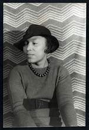
"Spunk," one of Hurston's early short stories, was first published in 1925 and featured in Alain Locke's The New Negro, a cornerstone anthology of the Harlem Renaissance. The story, set in Eatonville, Florida—the first all-Black incorporated town in the United States and Hurston's hometown—explores themes of masculinity, power, fate, love, and the supernatural.
Through "Spunk," Hurston brought to life the unique expressions and complexities of Eatonville's residents, blending folklore with fiction to portray Black life and cultural identity on her own terms. The story demonstrates Hurston's ability to infuse everyday experiences with folkloric depth, creating narratives that resonate with readers while preserving cultural heritage.
In honor of "Spunk's" centennial, Kimber Thomas and Anaya Patel of the Library of Congress's Connecting Communities Digital Initiative (CCDI) produced an animated film adaptation of the short story that reimagines it for contemporary audiences. Drawing from Hurston's archival photographs, field recordings, & manuscripts housed at the Library of Congress, the adaptation combines historical fidelity with digital storytelling, inviting a new generation to step into & explore Hurston's world.
This site provides a behind-the-scenes look at the creative process of bringing "Spunk" to digital life, showing how we used archives and advanced digital tools—including 3D modeling software, audio editors, and game development platforms—to create historically accurate characters and to construct a detailed 3D representation of early 20th century Eatonville. We also describe how we used Hurston's field recordings from the Florida Folklife from the WPA Collections, 1937 to 1942, at the Library of Congress to build the film's score, adding a soundscape that deepens and enriches the experience.
By combining archival preservation with digital innovation, this project amplifies Hurston's writings and legacy, allowing audiences to experience Black culture and folklore as she documented it. Through this reimagining of "Spunk," we invite new generations to explore Hurston's world and to connect with the cultural richness she captured in Eatonville and beyond.
By Kimber Thomas, Ph.D., Connecting Communities Digital Initiative, and Anaya Patel, Archives, History, and Heritage Intern, Library of Congress
Behind the Scenes: A Look into the Creative Process
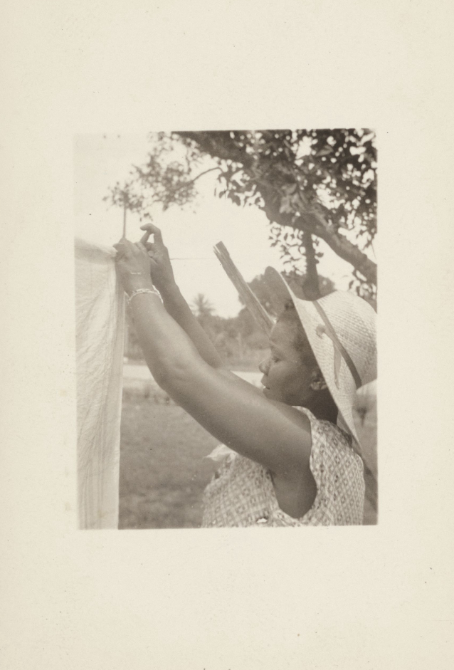
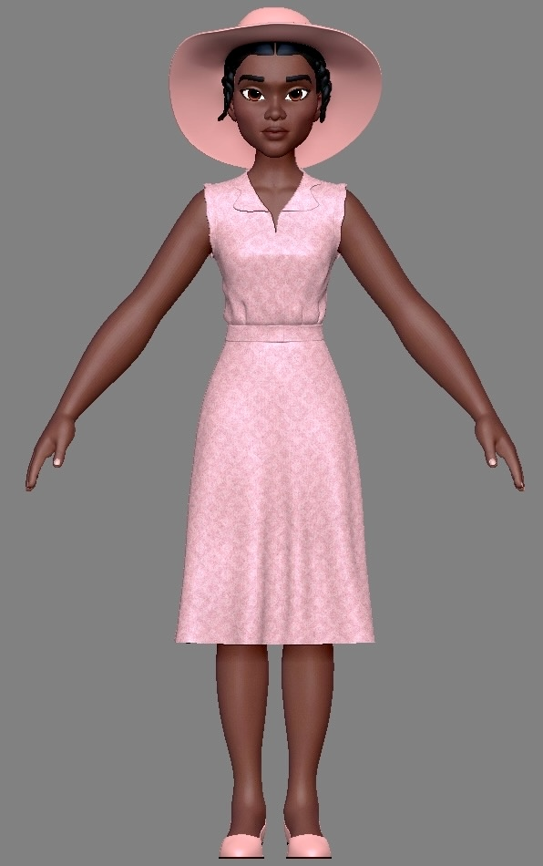
From this 1935 Library of Congress photograph of a woman hanging laundry in Eatonville, Florida, we created a 3D background character complete with her distinctive wide-brimmed hat and period-accurate pink dress, preserving the details of daily life in Hurston's community.
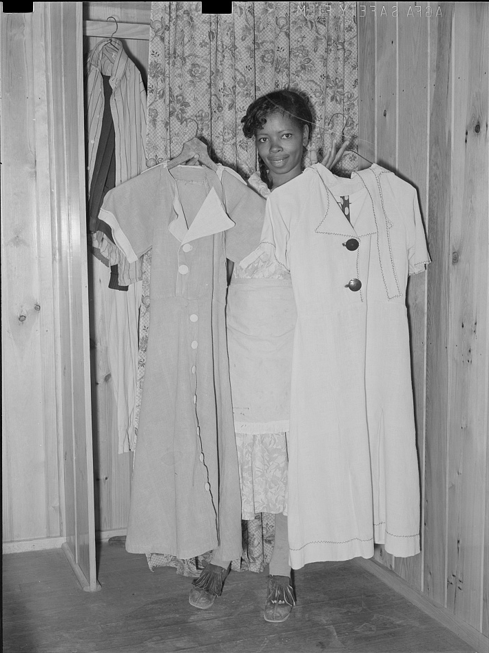
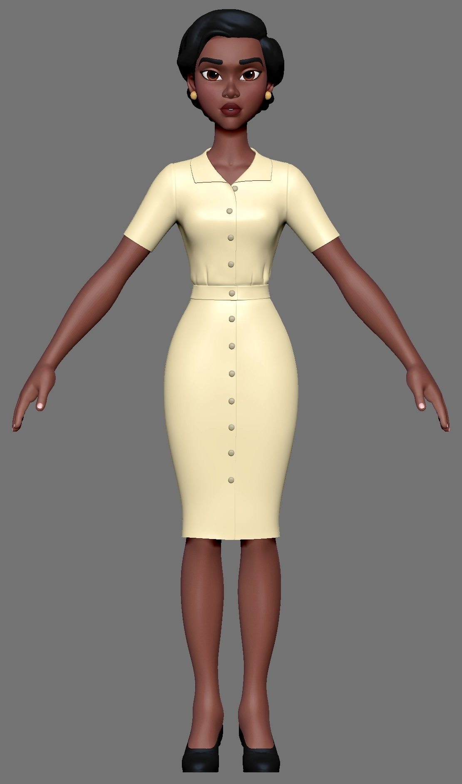
Drawing inspiration from this Library of Congress photograph of a woman in Marshall, Texas, displaying dresses she crafted from flour sacks, we designed Lena's signature yellow dress to reflect the resourcefulness and fashion sense of 1930s Southern women who transformed everyday materials into beautiful garments.
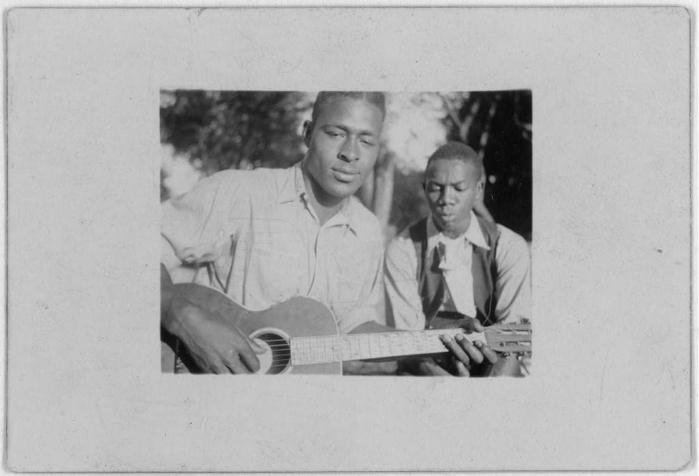
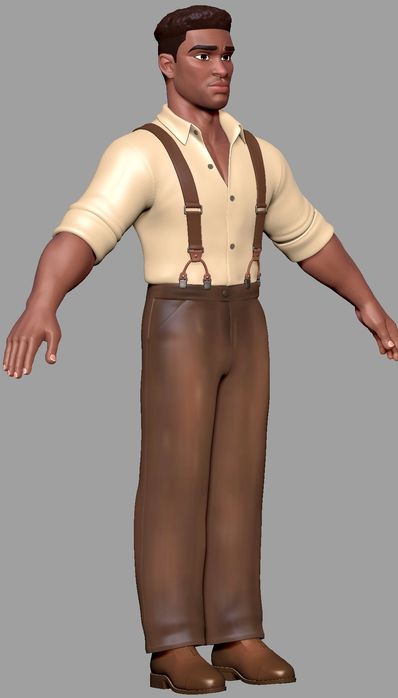
Using this Library of Congress photographs of Gabriel Brown and Rochelle French in Eatonville, Florida, we designed Joe Kanty's wardrobe with suspenders, a collared shirt, and wide-leg trousers, while styling his hair to match the neat, close-cropped cuts worn by men in the community Hurston wrote about.
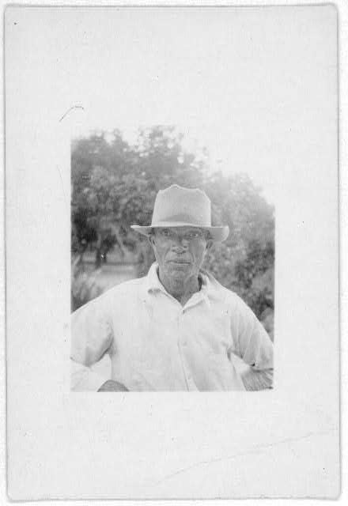
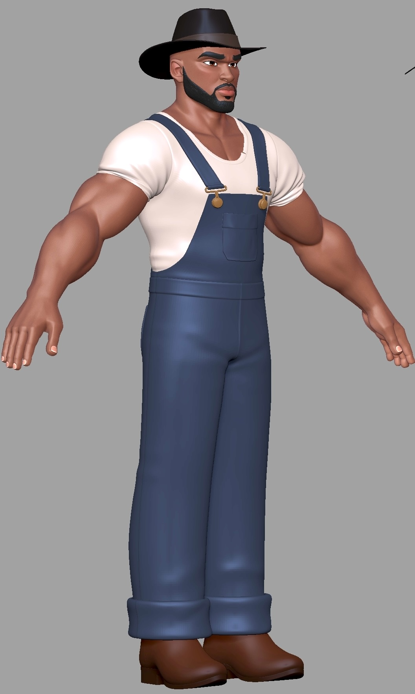
Drawing from this Library of Congress photograph of a man in 1930s Eatonville and Hurston's description of Spunk as a "giant of a brown-skinned man" in overalls, wearing a big black Stetson, we created our title character with the imposing physical presence and signature hat that embodied his fearless, larger-than-life persona.
modeling the Characters
The characters in “Spunk”—Lena, Spunk, Joe, and Elijah Mosley were inspired by archival images of Eatonville’s residents from the 1930s, drawn from Hurston’s own fieldwork photos. The archives provided invaluable insight into the everyday lives of Eatonville’s residents during the early twentieth century, allowing us to create characters that feel grounded in the specific time and place of “Spunk.” With these historically informed designs alongside Hurston’s field recordings, the characters connect viewers to the everyday people at the heart of her stories.
building the Environment
Hurston’s archival materials at the Library of Congress allowed us to digitally rebuild early 20th-century Eatonville, making it real and alive for today’s audiences. Our digital recreation is based closely on these materials, grounding every detail in historical authenticity. For example, the church—modeled after Reverend Haynes’s Methodist Church—is placed at the center of the community, representing the social and cultural heart of Eatonville. Joe Clarke’s store, another focal point, was recreated using 3D assets as a lively gathering place, reflecting the interactions Hurston described in “Spunk” and other short stories. From key landmarks to homes and buildings, these 3D reconstructions bring Hurston’s Eatonville to life, connecting contemporary audiences to the vibrant community she documented.
Building the Environment
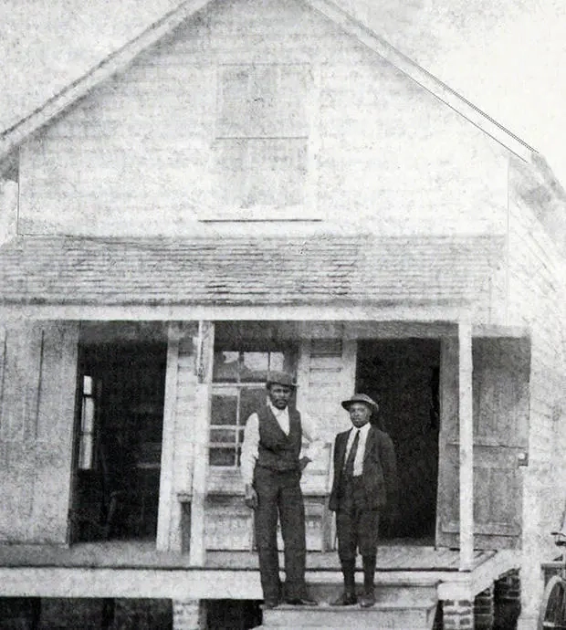
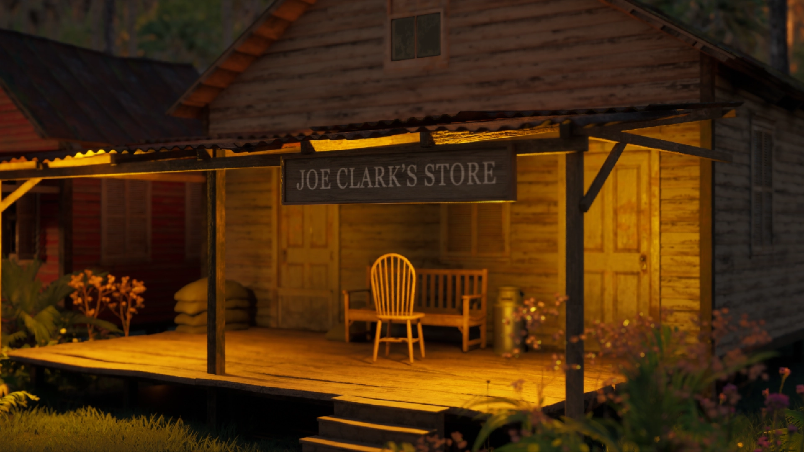
Using free 3D assets like wood planks and custom texture work, we transformed this archival photograph of Joe Clark's Store into a detailed 3D model, adding the store's name signage, period-accurate interior details, and atmospheric lighting to recreate this central community gathering place from Hurston's writings.
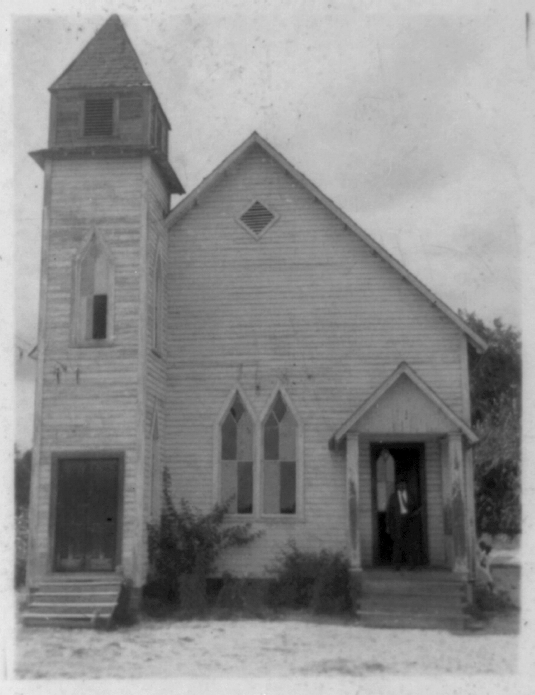
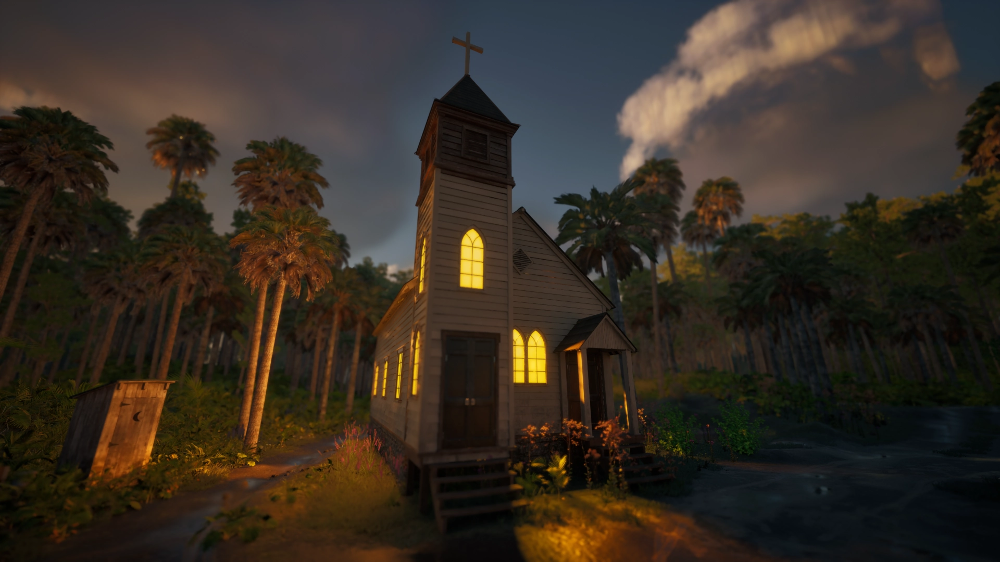
From this Library of Congress archival photograph, we rebuilt Reverend Haynes’s Methodist Church as a 3D model complete with arched glass windows and a lush Florida landscape that establishes the church as the spiritual and social anchor of Hurston's community.
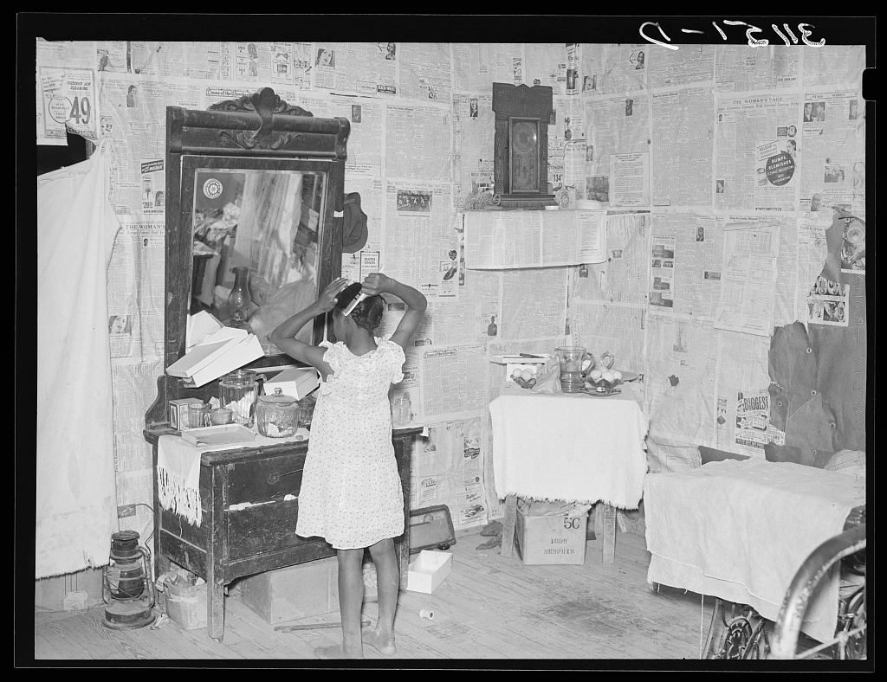
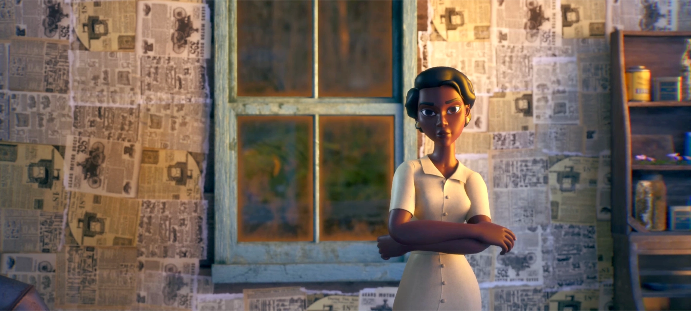
Using this Library of Congress photograph of a sharecropper's home as a reference, we recreated Lena's house interior with authentic details including newspaper-papered walls—a southern African American homemaking tradition—and haint blue paint around the windows, a color rooted in African American folklore believed to ward off evil spirits.
creating the Film score
The soundtrack is more than just a musical backdrop; it’s an essential part of the storytelling. Using Hurston’s own field recordings from the Florida Folklife from the WPA Collections, 1937 to 1942, AHHA intern Anaya Patel crafted a soundscape that immerses audiences in the sounds of Eatonville.
By embedding songs, chants, and conversations that Hurston documented, the score grounds the narrative in her legacy, creating a historically authentic atmosphere that connects viewers to her world in a vivid, resonant way.